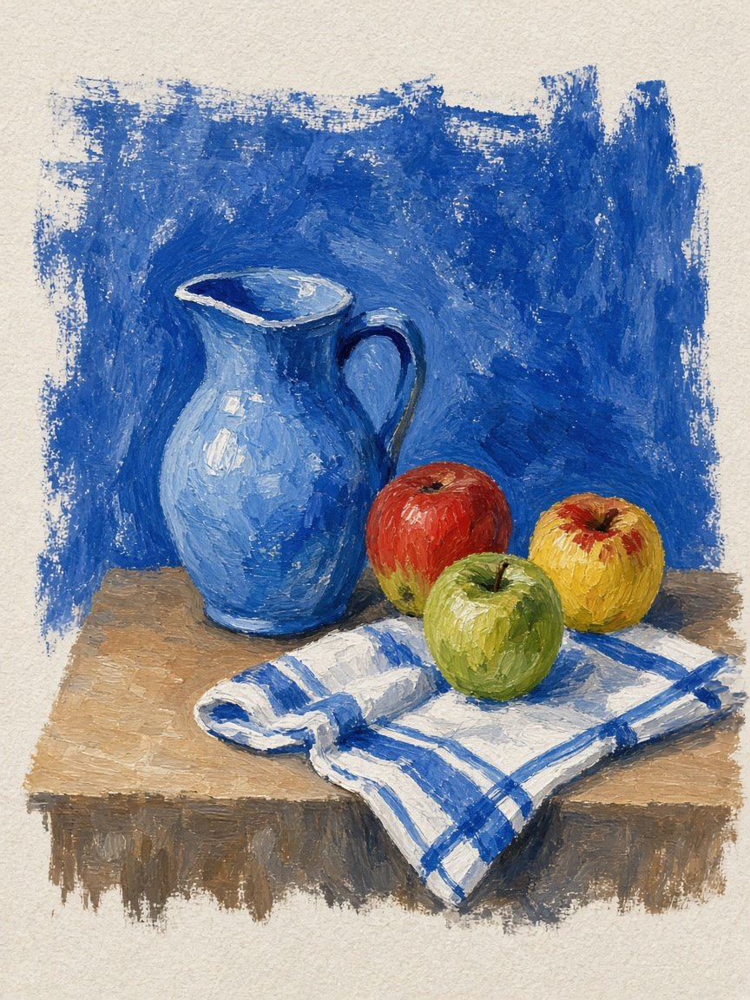
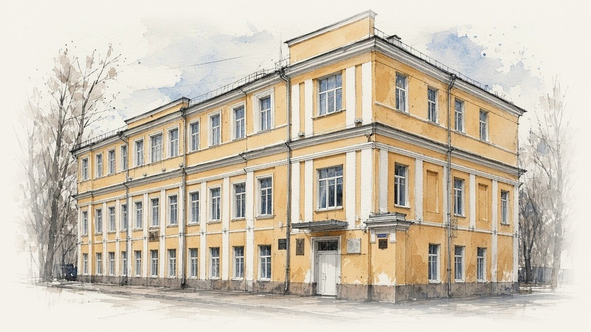
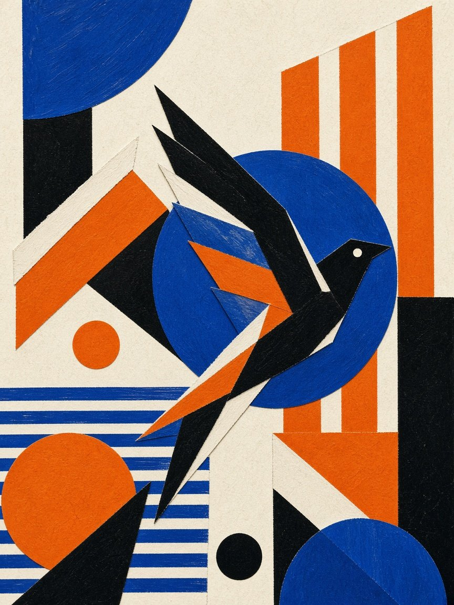
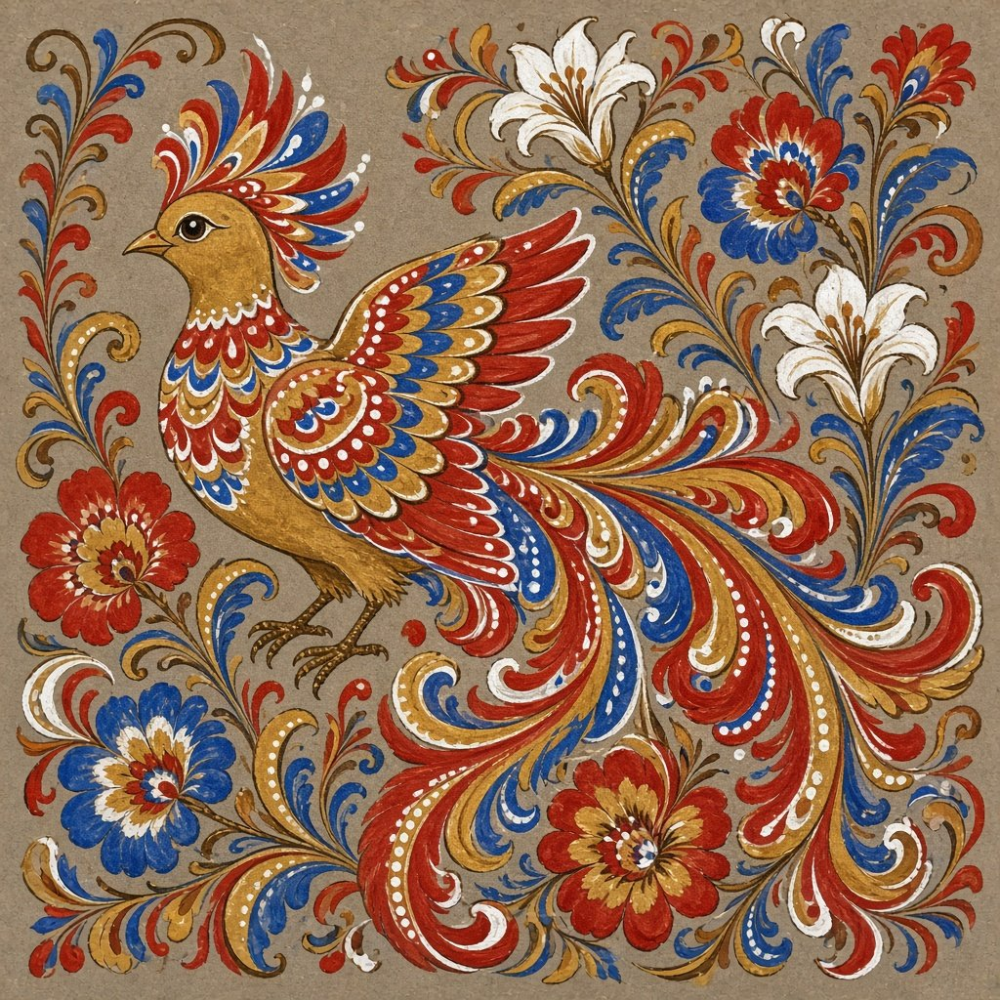
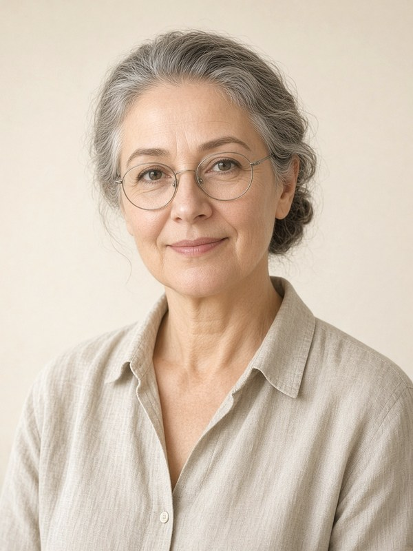
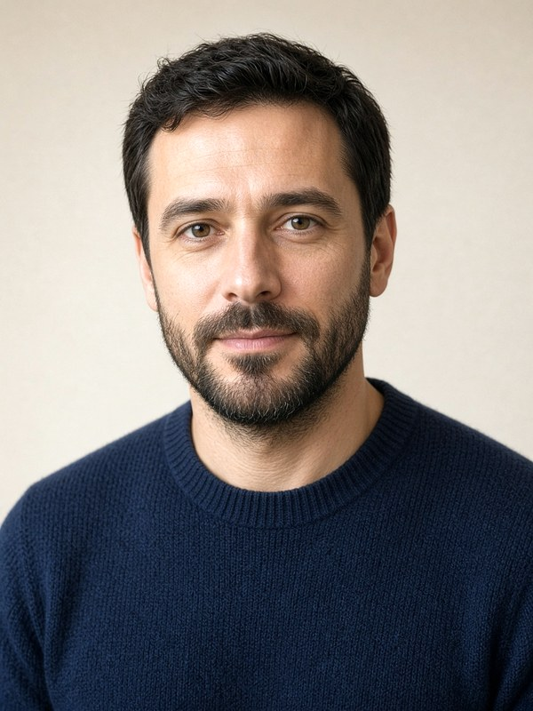
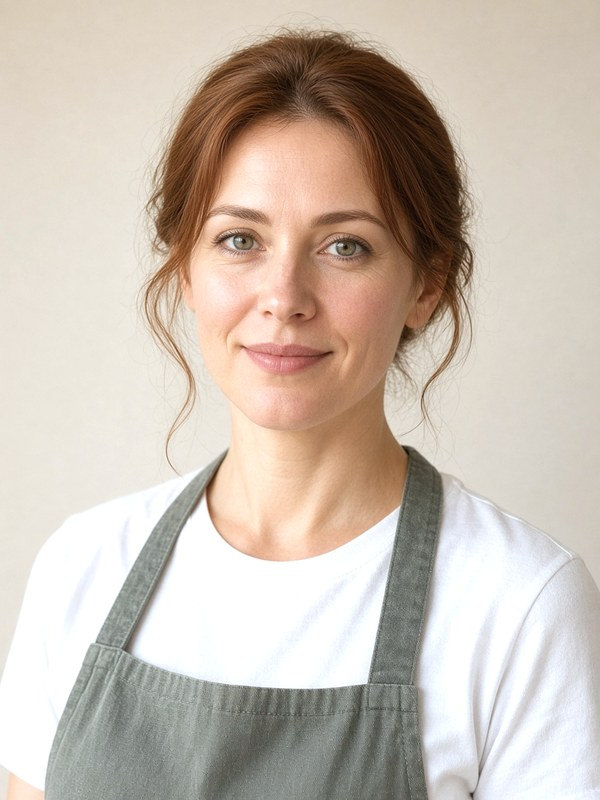
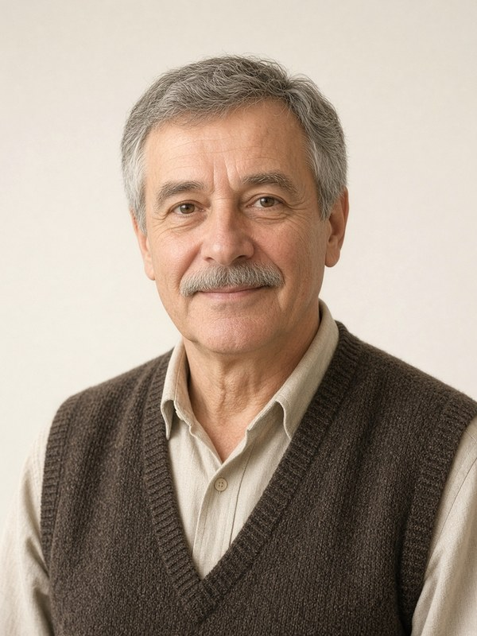
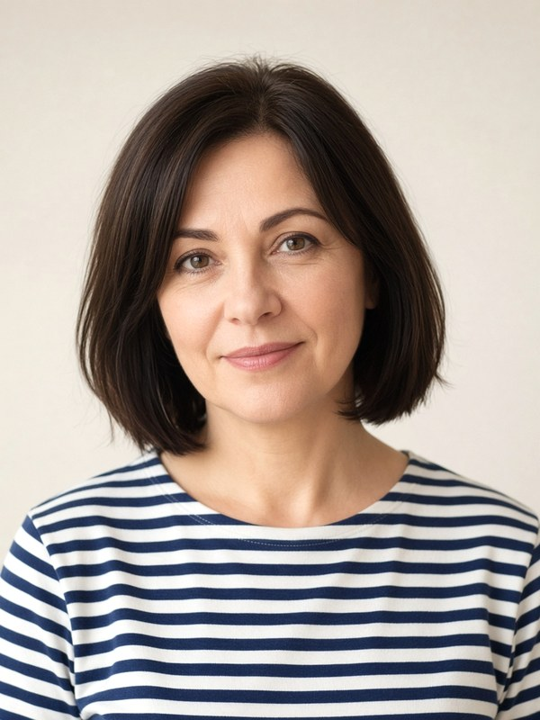
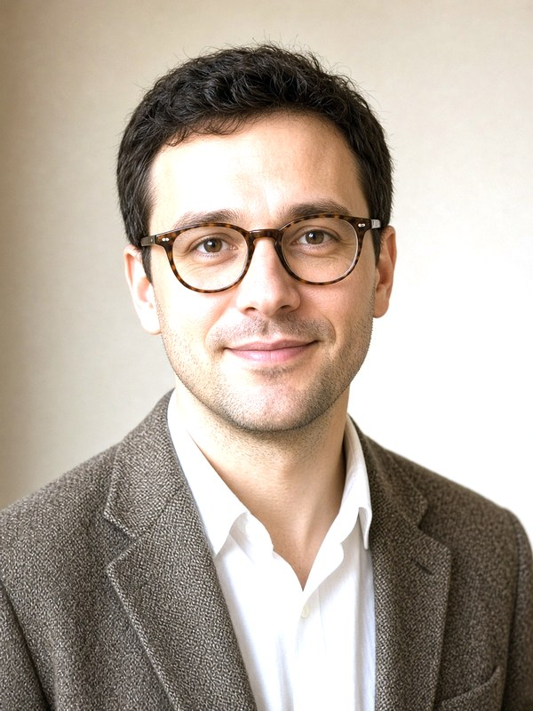

10–12 лет при поступленииЖивопись
Рисунок, живопись, станковая композиция, скульптура и пленэр. Предпрофессиональная программа, 5 лет обучения.
ПодробнееДля детей и подростков в памятнике архитектуры 1781 года. Подготовительные группы — с 6 лет.


10–12 лет при поступленииРисунок, живопись, станковая композиция, скульптура и пленэр. Предпрофессиональная программа, 5 лет обучения.
Подробнее
10–12 лет при поступленииОсновы дизайн-проектирования, компьютерная графика, конструктивный рисунок и пленэр. Предпрофессиональная программа, 5 лет обучения.
Подробнее 6–10 лет
6–10 летРисунок, живопись, лепка и керамика для дошкольников и младших школьников. Платное обучение.
Подробнее взрослые
взрослыеРисунок, живопись, батик и художественная резьба по дереву. Платное обучение.
Подробнее1 класс отделений «Живопись» и «Дизайн» и подготовительные группы. Документы подаёт лично родитель.
19 августа — рисование с натуры, 20 августа — композиция. С 10:00 до 12:00. Бумага А3, краски, кисти, палитра, кнопки, графитный карандаш, ластик.
Подготовительные группы для детей 6–10 лет: живопись, лепка, творческая деятельность.


В выставочном зале школы — работы, написанные на летнем пленэре.
Имена победителей и работы участников — в виртуальной выставке.
Ежегодная городская премия за творческие успехи и результаты в учёбе.
С 1992 года школа работает в здании — памятнике архитектуры федерального значения, построенном в 1781 году по приказу Екатерины Великой. До 1917 года здесь был Дом губернатора, позже здание приспособили под детскую художественную школу.

В конце XIX — начале XX века княгиня Тенишева развивала изобразительное и русское декоративно-прикладное искусство. В Талашкине под Смоленском она создала центр народных художественных промыслов — с мастерскими, школой и производством.
В 1896 году в Смоленске Тенишевой была открыта Рисовальная школа. Сегодня мы продолжаем это дело — учим видеть, рисовать и беречь традиции народного творчества.

Живопись, рисунок · высшая категория

Дизайн, композиция · член Союза дизайнеров

Керамика, лепка · подготовительные группы

Батик, резьба по дереву · вечерние классы

Рисунок, станковая композиция

История искусств
Основные сведения, документы, образование, руководство и педагогический состав, платные услуги, вакантные места, доступная среда
Нормативные документы, отчёты, обратная связь
Результаты НОКО и анкета для родителей
Условия для обучающихся с ОВЗ и версия сайта для слабовидящих
Концепт. Изображения работ и здания сгенерированы и будут заменены материалами школы; новости, события, педагоги и подписи работ — демонстрационные. Карта и виджеты — заглушки. Адрес, телефоны, история школы, программы и условия приёма 2026 года — с текущего сайта smoldhsh.ru.